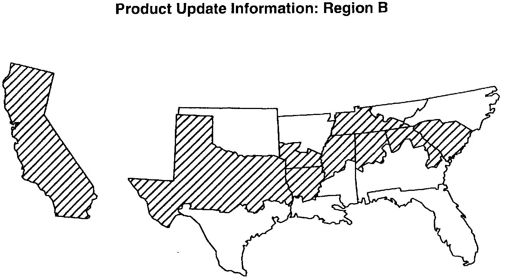

Product Update Information: Region B

The lined area in the above map is Region B. This region includes these zip codes.
Alabama First two digits are 35
Arkansas First two digits are 71
California ALL
Georgia First two digits are 30
Louisiana First two digits are 71
Mississippi First two digits are 38
South Carolina ALL
Tennessee First two digits are 38
Texas All except 77 and 78